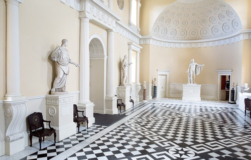
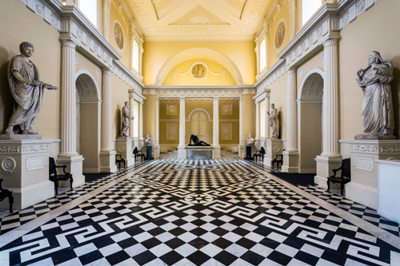
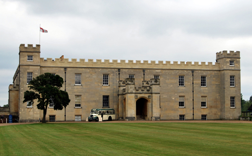
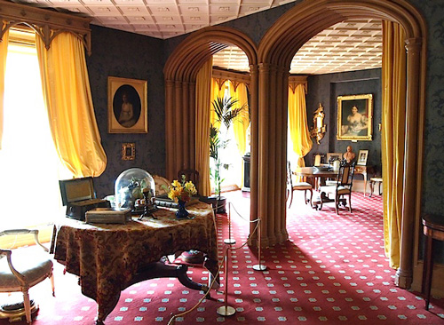
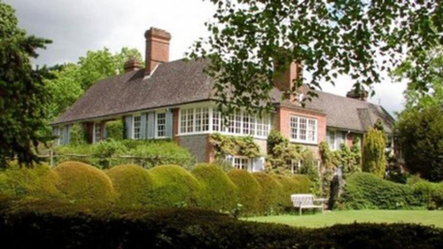
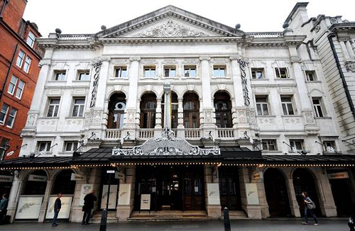

|
||
 |
||
Kensal Green Cemetery as the venue for Poirot's 'funeral'.  The Great Hall at Syon House, Brentford (looking towards the Apollo Belvedere) used as the setting for the chess game.
 The Great Hall looking the other way (towards the Dying Gaul).
 The entrance to Syon House from where Abe Ryland is kidnapped. (Syon House Conservatory is used in 'The Labours of Hercules').
The facade of the Richmond Theatre as the theatre where Flossie Monro is performing in Romeo and Juliet. (Also seen in 'Mrs McGinty's Dead' and 'The Clocks').  The Drawing Room at Hughenden Manor at High Wycombe used as the interior of 'Jonathan Whalley's House'.
The exterior however is the Manor House in Little Missenden.  Nuffield Place at Henley-on-Thames used as the 'Paynter House'. Built in 1914 for William Richard Morris, 1st Viscount Nuffield, the British motor manufacturer and philanthropist, who lived there until his death in 1963.
The Undercroft of Lincoln's Inn Chapel where Poirot meets Tysoe and where the tramp is murdered.  The Noël Coward Theatre (formerly the Albery) in St. Martin's Lane, London WC2 where Flossie Monro goes for her 'audition'. Previously the home of the Methuselah Players.
However, the interior of the Hackney Empire, London E8 is used for the denouement. (Also seen in 'Four and Twenty Blackbirds').
|
||
 |